3.1 Étudier les processus de l’organisation
Programme
Pédagogie
Compétences attendues
- Identifier les processus clés de l’organisation et leurs caractéristiques
- Classer les processus selon leur typologie
- Identifier les acteurs, les activités, les flux d’information et les événements
- Représenter un processus
- Améliorer, enrichir un processus en fonction de nouvelles règles de gestion
- Corriger les dysfonctionnements d’un processus
Savoirs associés
- Notion de processus
- Typologie des processus : métier, de support, de pilotage
- Contribution du système d’information à la qualité des processus
- Représentation d’un processus
- Reconfiguration d’un processus
Plan
- Cours 3.1.1 Découpage du fonctionnement de l’organisation en processus 3.1.2 Représentation sous forme de schéma de flux 3.1.3 Enrichissement du schéma des flux d’information 3.1.4 Règles de modélisation du schéma « événement-résultat » 3.1.5 Schéma « événement-résultat » avec découpage du traitement par acteurs 3.1.6 Amélioration ou modification d’un processus 3.1.7 Processus clés
- Synthèse
Mots clés
Acteur • Activité • Amélioration des processus • Dysfonctionnement • Événement déclencheur • Flux d’information • Modelisation • Performance • Processus • Traitement
Pourquoi mettre en œuvre une approche par processus ? Quels sont les types de processus rencontrés dans une organisation ? Selon les processus considérés, différents acteurs sont concernés. La modélisation des flux d’information échangés permet de les visualiser et d’adapter au mieux toutes les étapes de traitement. Quels sont les événements déclencheurs de ces activités ? Que produisent-elles ? Comment corriger un processus présentant des dysfonctionnements, l’améliorer ou l’enrichir pour accroître la performance de l’organisation ?
Cours
3.1.1 Découpage du fonctionnement de l’organisation en processus
Remise en cause de l’organisation traditionnelle
- Historiquement, les entreprises ont défini leur organisation autour d’activités le plus souvent structurées par fonctions ou services (ex. : approvisionnement, production, commercialisation, administration).
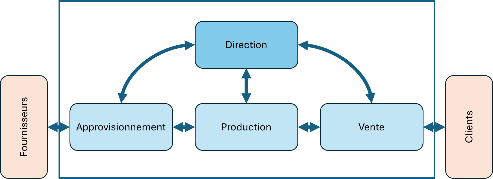
- L’organisation traditionnelle nécessite des interactions qui reposent principalement sur des échanges humains ;
- Lorsque l’entreprise grandit, elle est confrontée à des problèmes de communication ou de sélection des priorités dénommés « effet silo » ;
- la communication intra-service est efficace mais la communication inter-services l’est moins.
- La cohérence globale est alors remise en cause.
Gestion par processus
- La gestion par services indépendants ne correspond plus à l’environnement actuel des organisations, lesquelles doivent s’adapter aux exigences des clients, à la concurrence ou à la compétitivité ;
- L’organisation a besoin d’une structure transversale permettant à chaque acteur de réaliser ses activités en lui proposant des procédures d’échange des informations favorisant les interactions entre les services et la coordination des différents acteurs ;
- La gestion par processus offre une réponse satisfaisante.
Définition
Un processus est un ensemble d’activités utilisant des ressources pour transformer des éléments entrants en éléments sortants. C’est une succession d’activités réalisées à l’aide de moyens (personnel, équipements, matériels, informations) et dont le résultat est un produit.
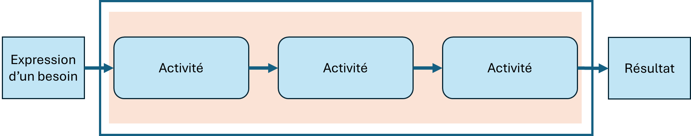
A savoir
Le résultat est à destination d’un client externe ou interne.
- L’approche par processus consiste à découper de façon méthodique une organisation ou une activité en processus, de manière à organiser sa contribution à la satisfaction des clients.
- Elle se caractérise par :
- Son aspect transversal : elle fait intervenir plusieurs fonctions ou services de l’organisation ;
- Son caractère stable et reproductible, même si son exécution peut varier dans le temps, en fonction de changements technologiques ou autres ;
- Son orientation « client ».
Typologie des processus
- Les processus sont classés en trois catégories :
- Les processus métier :** **
- Ils contribuent directement à la réalisation du produit, de la détection du besoin client à sa satisfaction ;
- Ils correspondent au cœur de métier.
- Les processus support :
- Dits aussi « processus de soutien » ou « processus logistiques », ils contribuent au bon déroulement des autres processus en leur apportant les ressources nécessaires ;
- Même s’ils ne créent pas de valeur directement perceptible par le client, ils sont nécessaires au fonctionnement permanent de l’organisation et à sa pérennité.
- Les processus de pilotage :
- Dits aussi « processus de direction », les processus de pilotage contribuent à la détermination de la politique et au déploiement des objectifs ;
- Sous la responsabilité de l’équipe dirigeante, ils orientent et assurent la cohérence des deux autres processus.
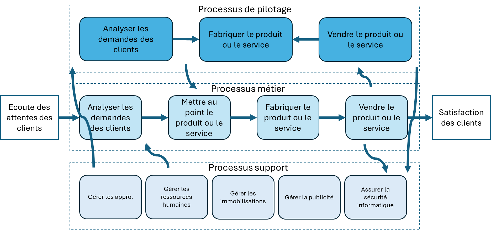
Exemple
L’opérateur téléphonique Come & Talk vend les téléphones fabriqués par de multiples organisations accompagnés ou non de forfaits téléphoniques. Il assure également un service de dépannage pour les appareils qui ne bénéficient plus de la garantie constructeur. La société a élaboré une liste (non exhaustive) de ses processus et les a classés dans les catégories suivantes :
Processus métier Processus de pilotage Processus suppport - Vente de téléphones
- Vente de forfaits téléphoniques
- Réparation du téléphone d’un client- Suivi de la qualité des actions de formation
- Décision d’ouverture d’une nouvelle agence commerciale- Recrutement de commercial
- Approvisionnement en téléphones
- Acquisition d’immobilisations
- Vérification de la sécurité des données
Intérêt de la modélisation des flux d’information
Définition
La modélisation des processus consiste en une représentation schématique des flux d’information entre différents acteurs intervenant dans un même processus.
- La modélisation poursuit plusieurs objectifs : elle permet de comprendre le fonctionnement de l’organisation qui, ensuite, pourra être analysé puis optimisé.
- La schématisation constitue également un support interne de communication. Elle facilite ensuite la prise en compte de nouvelles fonctionnalités.
- Les modèles (représentations du réel) proposés par chaque méthode sous-tendant une démarche intellectuelle.
- Le respect des symboles est donc important car il canalise la réflexion et facilite la communication.
3.1.2 Représentation sous forme de schéma de flux
Domaine d’étude
- Pour étudier un système complexe, il est utile de le décomposer en domaines d’ampleur plus limitée ;
- Le domaine d’étude principal, celui que l’on analyse, est obtenu par décomposition du système d’information (SI) ;
- Un domaine d’étude connexe peut être représenté car il échange des flux d’information avec le domaine principal mais il ne sera pas étudié.
Exemple
Les téléphones mobiles à réparer, déposés par les clients, qui ont été collectés par les boutiques de l’opérateur Come & Talk parviennent au SAV chaque lundi. L’accueil du SAV étudie l’intervention à réaliser et crée une fiche d’intervention. Le technicien évalue l’intervention à réaliser et crée une fiche d’intervention. Le téléphone est réparé lorsqu’un technicien est disponible. Trois types d’intervention peuvent être réalisés (remise en état de l’aspect esthétique, réparation, remplacement d’un composant). Le technicien vérifie la disponibilité des pièces, contacte, le cas échéant, le service des achats et place le téléphone en attente de réparation. Dès réception des pièces, le service des achats informe le technicien qu’il peut intervenir. Les tests définitifs sont réalisés par le service de contrôle qui valide l’opération ou renvoie le téléphone au technicien pour modification. Le téléphone repasse au contrôle avant d’être renvoyé par le service d’accueil à la boutique, accompagné d’un bon de livraison.
Dans ce cas, l’étude porte sur le processus de réparation du téléphone mais le technicien doit déclencher, auprès du service des achats, le processus d’approvisionnement en pièces détachées dans l’hypothèse d’une rupture de stock.
Acteurs
- L’acteur, interne ou externe, peut être une personne identifiée par son rôle (ex. : sa fonction, sa responsabilité) dans le processus, un service, une machine (ex. : robot intervenant dans la réalisation d’une ou plusieurs activités du processus) ou une autre organisation ;
- Un acteur interne intervient dans le processus et réalise des activités créatrices ou transformatrices d’informations ;
- Un acteur externe au processus est uniquement destinataire ou émetteur d’informations.
Exemple (suite)
L’étude du processus de réparation des téléphones de Come & Talk fait intervenir les acteurs suivants :
Type d’acteur Acteur interne Acteur externe Individu - Technicien
- Opérateur de contrôle- Client
- FournisseurGroupe formel - Service de contrôle
- Service d’accueil- Service des achats
- Boutique
Flux d’information
Définition
Un flux d’information est un ensemble d’informations échangées (messages) entre deux acteurs du système d’information.
- Seuls les flux d’information présentent un intérêt pour l’étude des SI ;
- Un flux part d’un acteur émetteur pour aboutir à un acteur destinataire, il est caractérisé par un support de communication (papier, numérique, etc.) et par sa nature ou son sens ;
- On distingue quatre types de flux :
- Flux interne, s’il est émis par un acteur interne à destination d’une cible interne ;
- Flux entrant, s’il est émis par un acteur externe à destination d’une cible interne ;
- Flux sortant, s’il est émis par un acteur interne à destination d’une cible externe ;
- Flux externe, s’il est émis par un acteur externe à destination d’une cible externe.
- Le SI conserve l’information échangée dans des bases de données et fournit les supports de communication grâce aux réseaux et applications communicantes (ex. : plateforme collaborative, workflow, messagerie).
Schéma de flux d’information
Schéma acteurs-flux (niveau 0)
- Un flux d’information est matérialisé par une flèche orientée vers un acteur (cercle) ou un domaine (rectangle) au-dessus de laquelle on en précise l’événement déclencheur ;
- Le passage d’un flux à l’autre suppose un traitement (du flux entrant vers le flux sortant) ;
- En ordonnant les flux dans un graphe, on peut préparer la définition des traitements.
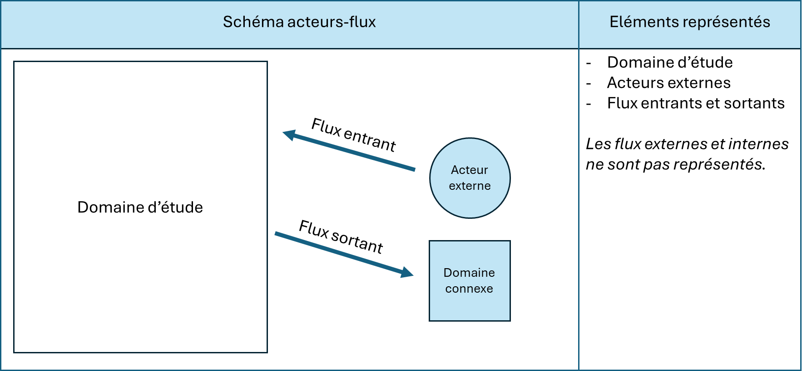
Exemple (suite)
On cherche à représenter le diagramme des flux du processus de réparation des téléphones de Come & Talk.
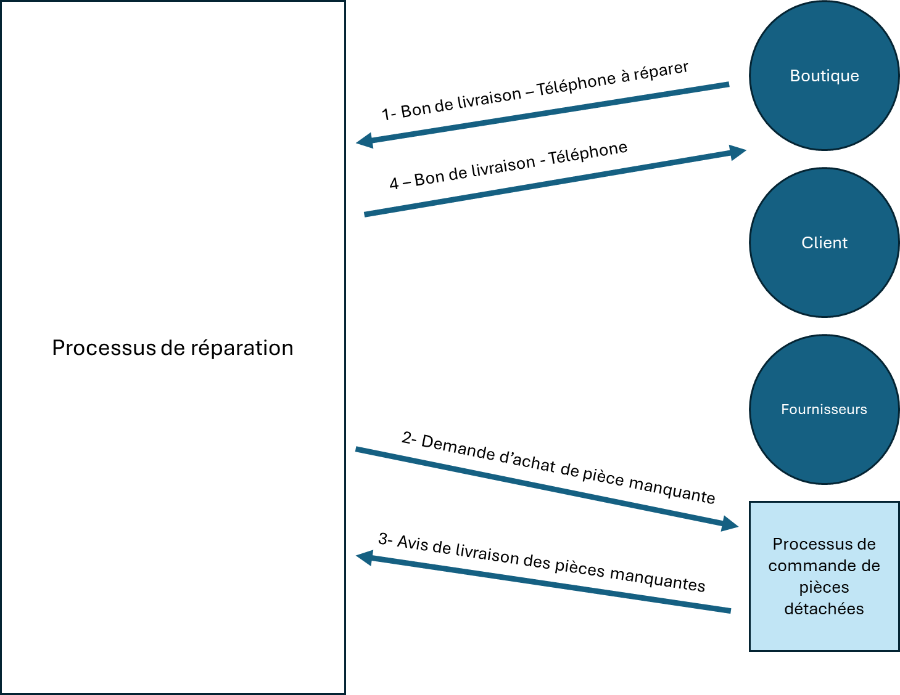
A savoir
Lorsque vous schématisez un processus au niveau 0, souvenez-vous que les flux externes au domaine d’étude ne sont pas représentés, de même que les flux internes.
Schéma acteurs-flux-activités (niveau 1)
- Le schéma de flux d’information de niveau 1 a pour objectif de repérer les activités exercées au sein d’un processus.
Définition
Une activité est constituée par un ensemble de tâches non interruptibles réalisées par un acteur interne au processus.
- Les tâches d’une activité doivent pouvoir s’exécuter en continu, c’est-à-dire qu’elles ne peuvent être interrompues par l’attente d’un nouveau flux d’information.
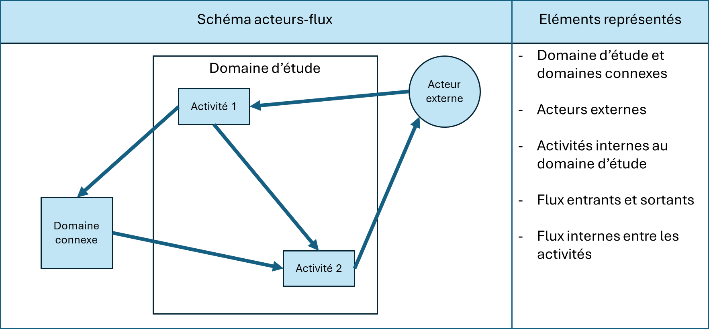
Exemple (suite)
L’analyse du processus de réparation d’un téléphone de la société Come & Talk montre que les acteurs internes du processus réalisent les tâches suivantes :
Service d’accueil Technicien - Réception du téléphone
- Évaluation de l’intervention
- Création de la fiche intervention
- Envoi du téléphone en réparation
Cette suite est constituée de tâches non interruptibles et génère l’activité « réception du téléphone à réparer »- Vérification de la disponibilité des pièces détachées
- Réparation du téléphone
- Contact du service d’achat
- Envoi du téléphone au service de contrôle
Cette suite est constituée de tâches non interruptibles et génère l’activité « réparation du téléphone ».Service de contrôle Service d’accueil - Réalisation des tests
- Évaluation de la qualité de la réparation
- Renvoi du téléphone en réparation
- Envoi du téléphone au service d’accueil
Cette suite est constituée de tâches non interruptibles et génère l’activité « contrôle du téléphone réparé ».- Réception du téléphone réparé
- Renvoi du téléphone à la boutique pour qu’il soit remis au client
Cette suite est constituée de tâches non interruptibles et génère l’activité « renvoi du téléphone réparé ».On cherche à réaliser le schéma des flux du processus de réparation des téléphones de Come & Talk.
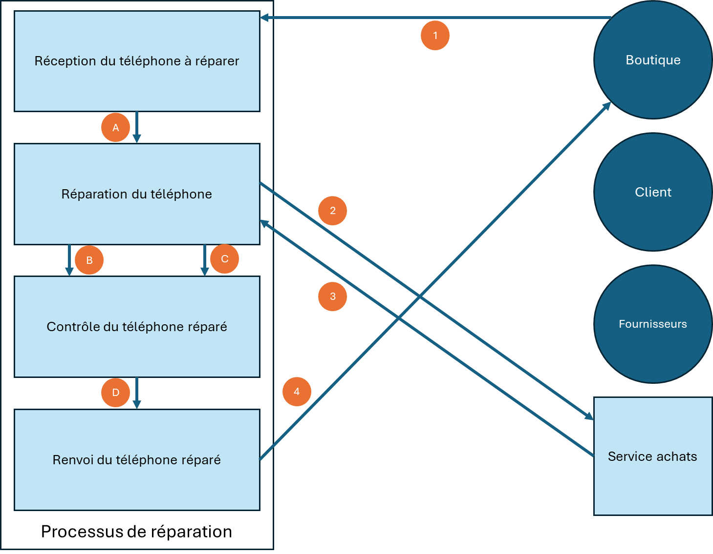
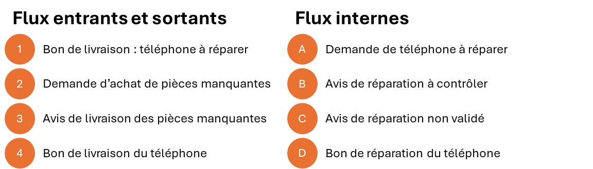
Les flux entre la boutique et les clients ne sont pas représentés car il s’agit de flux externes au processus, de même que les flux entre le service Achats et les fournisseurs.
Mise en pratique
Cas pratique 1 : Life is Life
Lorsqu’un assuré de la compagnie d’assurances Life is life est victime d’un sinistre, il doit le déclarer dans les 2 à 5 jours en fonction de la nature du préjudice subi. Le non-respect du délai expose l’assuré à un refus d’indemnisation de la part la compagnie. Les déclarations de sinistre sont reçues par le service du même nom. Il examine la recevabilité. Les demandes recevables seront ensuite transmises au service Indemnisation qui réclame le plus souvent le passage d’un expert indépendant mandaté par la compagnie. Il lui revient de contacter l’assuré pour évaluer les dommages subis. L’expert transmet ensuite son rapport à la compagnie qui calcule l’indemnité à verser à l’assuré. Le schéma des flux correspondant a été établi (document).
- Indiquez, pour chaque numéro, l’élément du schéma de flux concerné.
- Catégorisez le processus modélisé.
- Expliquez pourquoi le flux d’information entre l’expert et l’assuré n’a pas été représenté.
- Analysez les conditions dans lesquelles le flux d’information n° 2 est émis.
- Catégorisez les processus « Comptabilité » et « Définir les objectifs stratégiques ».
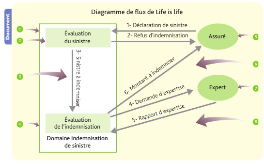
Cas pratique 2 : Alpha santé
Compétence attendue
Classer les processus selon leur typologie
L’activité de l’établissement de soins Alpha Santé peut être décrite par les processus suivants :
Accueil au service d’urgence
Gestion des ressources financières
Admission d’un patient
Gestion des ressources humaines
Management des risques infectieux
Accueil au bloc opératoire
Gestion du dossier du patient
Restauration du patient
Management de la qualité
Traitement des déchets médicaux
Gestion du système d’informations
Consultations externes
Imagerie, biologie
Management stratégique
Sortie du patient
Indiquez la catégorie dont relève chacun des processus mentionnés ci-avant.
Cas pratique 3 : Kutchimoto
Compétences attendues
- Identifier les processus clés de l’organisation et leurs caractéristiques
- Classer les processus selon leur typologie
L’activité du garage-concessionnaire Kutchimoto peut être décrite par les processus suivants :
Vendre des voitures
Acheter des voitures
Gérer la publicité
Gérer les ressources humaines
Entretenir ou réparer un véhicule
Gérer les stocks de pièces détachées
Déterminer et mettre en œuvre la stratégie
Vendre des pièces détachées
Mesurer la satisfaction des clients
Entretenir l’outillage
Former le personnel
Indiquez la catégorie dont relèvent chacun des processus mentionnés ci-avant. Pour toute demande de réparation ou d’entretien, le secrétariat demande à un technicien de l’atelier d’émettre un prédiagnostic qui lui permet d’établir le devis que le client devra signer avant que ne débute l’opération. L’intervention sur le véhicule sera effectuée lorsque le technicien sera disponible ; elle peut nécessiter de sortir des pièces détachées du magasin de stockage. L’achèvement de l’intervention déclenche la rédaction d’un rapport, ainsi que la facturation établie par le secrétariat à partir des informations transmises par le technicien. Le rapport et la facture sont remis au client qui ne pourra récupérer son véhicule à l’atelier que lorsque qu’il aura réglé son dû auprès du secrétariat et que celui-ci en aura averti le technicien. Au cours du processus « Entretenir ou réparer un véhicule », les flux d’information répertoriés dans le document sont échangés.
Indiquez, pour chaque flux, l’acteur qui en est à l’origine ainsi que l’acteur cible.
Représentez le schéma acteurs-flux (niveau 0) du domaine « Entretenir ou réparer un véhicule ».
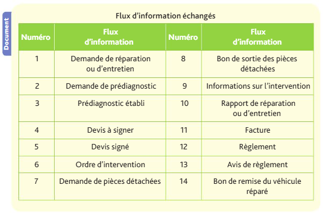
Cas pratique 4 : Bric&Broc
Compétences attendues
- Identifier les acteurs, les activités et les flux d’infor mations
- Représenter un processus sous forme de schéma de flux
La société Bric&Broc commercialise des meubles fabriqués sur commande par des artisans locaux. Ses dirigeants envisagent d’étendre leur activité en réalisant des aménagements de locaux pour la clientèle professionnelle (restaurants, bars et clubs). Les acteurs du processus de préparation d’aménagement des locaux sont le client, les artisans locaux, le commercial qui se rend chez le client pour y prendre des photos et discuter de ses attentes, le bureau d’études et le contrôleur de gestion. L’architecte du bureau d’études de la société dessine un plan pour chaque équipement sur mesure ainsi qu’un plan général du local pour la décoration et l’aménagement du local. Après réception du plan de l’architecte, le commercial envoie au client les plans effectués et celui-ci doit confirmer son accord ou les éventuelles modifications à apporter. Après avoir obtenu la réponse du client, le commercial contacte les artisans afin qu’ils proposent le mobilier adéquat et le prix de l’installation chez le client. Après avoir pris contact avec le contrôleur de gestion pour valider le prix de la prestation, le devis chiffré est proposé au client pour signature. Lorsqu’il l’accepte, il doit payer un acompte de 30 %. Une fois le devis signé, le commercial adresse aux artisans l’ordre de fabrication du mobilier. Mission Représentez le schéma des flux du domaine de Bric&Broc décrit.
3.1.3 Enrichissement du schéma des flux d’information
Modélisation
- La modélisation ne permet pas de visualiser le déroulement de l’exécution d’un processus ni la coordination entre les traitements et les acteurs. Pour y remédier, il est possible de réaliser un schéma « événement-résultat » ;
Définition
Un schéma « événement-résultat » présente des opérations de traitement de l’information déclenchées par des événements synchronisés et produisant au moins un résultat.
- Comme dans les schémas de flux, il convient de repérer les différents acteurs intervenant dans le processus. Exemple
- Pour une activité correspondant à la gestion des réclamations de clients, telle que celle de Come & Talk, il convient d’abord de déterminer les flux d’information, leur chronologie et les acteurs : lorsque la réclamation arrive au service commercial 1️⃣, celui-ci analyse la demande afin de savoir si elle est justifiée ou non :
- Si la réclamation n’est pas acceptée par le service, un courriel de refus est envoyé au client 2️⃣ ;
- Si la réclamation est acceptée, deux cas de figure se présentent :
- Soit elle correspond à un article manquant, alors le service commercial déclenche la livraison auprès du service livraison 3️⃣ et avertit le client d’une livraison complémentaire à venir 4️⃣ ;
- Soit elle traduit une insatisfaction du client vis-à-vis des produits qui lui ont été livrés, alors le service commercial établit un avoir 5️⃣.
| Flux d’information ou de documents | Acteurs-cible | ||
|---|---|---|---|
| Client | 1 | Réclamation | Service commercial |
| Service commercial | 2 | Courrier de refus | Client |
| Service commercial | 3 | Demande de livraison complémentaire | Service livraison |
| Service commercial | 4 | Avis de livraison complémentaire | Client |
| Service commercial | 5 | Avoir établi | Client |
- La description de l’activité permet de visualiser le fait que, lorsque le service commercial reçoit une réclamation, il effectue sans interruption les tâches suivantes :
- Contrôle de la commande du client (il s’agit de s’assurer qu’une commande a bien été passée et livrée) ;
- Analyse de l’objet de la réclamation et vérification de son bien-fondé ;
- Rédaction du courrier de refus ;
- Établissement d’un avoir ;
- Demande de livraison d’un article complémentaire ;
- Le service commercial dispose bien de toutes les informations nécessaires pour réaliser l’ensemble de ces tâches de manière continue ;
- Elles vont donc constituer l’activité « Traitement réclamation ».
- Le schéma des flux permet de visualiser les acteurs et les flux d’information échangés.
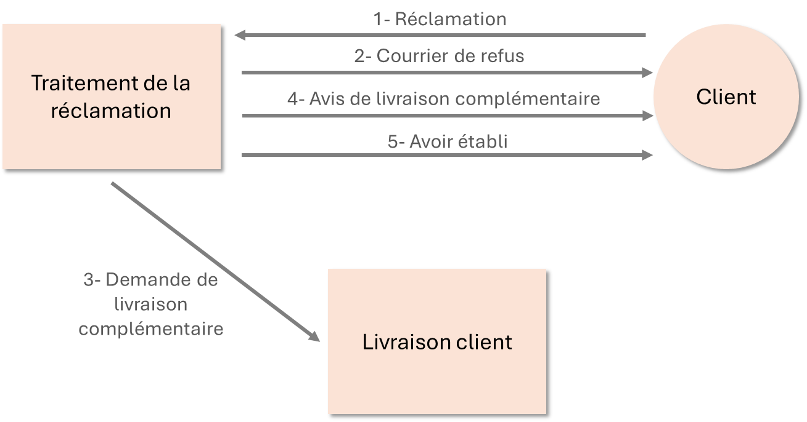
- Le schéma « événement-résultat » enrichit l’information fournie.
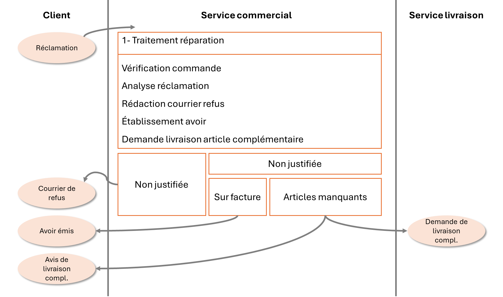
- Dans la modélisation « événement-résultat », on retrouve bien tous les flux d’information échangés entre les acteurs, mais également les tâches réalisées par l’acteur en charge du traitement de la réclamation ainsi que les différentes situations dans lesquelles il transmet les documents.
Mise en pratique
Cas pratique 1 : ClinCO
Compétence attendue
Identifier les processus clés de l’organisation et leurs caractéristiques
La modernisation des SI des établissements de santé est rendue nécessaire par l’émergence de nouvelles pratiques de la médecine (télémédecine) et l’évolution des contraintes réglementaires. CliniCO, clinique de l’Ouest parisien, a établi une matrice processus/objectifs opérationnels (document) afin de sélectionner les processus clés à modéliser et améliorer. Les processus suivants ont été identifiés :
Prise en charge administrative du patient
Processus de soins
Gestion des RH
Gestion des équipements
Gestion des médicaments
Processus de planification
Gestion des structures
Gestion de la connaissance
Identification du patient
Gestion du dossier patient
Gestion de la sécurité
Hiérarchisez pour CliniCo, parmi l’ensemble des objectifs listés, le plus et le moins important.
Repérez, parmi les processus cités, ceux qui font partie des processus métier et des processus support.
CliniCo souhaite réfléchir à l’amélioration de trois processus clés parmi les onze cités. En vous appuyant sur le document, conseillez le gérant de la clinique. Les chiffres mentionnés dans la matrice représentent l’impact du processus sur la réalisation de l’objectif :
- 1 : impact faible
- 2 : Impact moyen
- 3 : Impact fort L’absence de chiffrage traduit un impact négligeable.
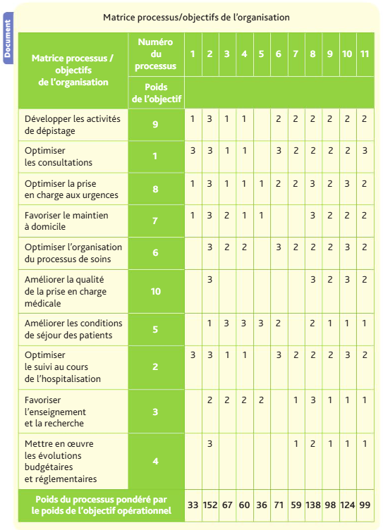
3.1.4 Règles de modélisation du schéma « événement-résultat »
Intérêt
- À quoi sert un schéma événement-résultat ?
-
Imaginez une entreprise comme un organisme vivant :
- Elle réagit à des événements (ex. : une commande client, une livraison, un paiement) ;
- Ces événements déclenchent des actions (ex. : enregistrer la commande, mettre à jour le stock, envoyer une facture) ;
- Ces actions produisent des résultats (ex. : un bon de livraison, une facture, une écriture comptable).
-
Le SER est un outil visuel qui permet de :
- Décrire comment l’entreprise traite les informations ;
- Comprendre les liens entre les événements et les documents produits ;
- Simplifier la représentation d’un processus (sans entrer dans les détails techniques).
- Les 3 Éléments Clés du SER
- Un SER se compose toujours de :
- Un événement déclencheur (ce qui se passe et qui nécessite une action) ;
- Un traitement (ce que fait le système d’information) ;
- Un résultat (ce qui est produit à la fin).
| Éléments | Exemple 1 : Vente en magasin | Exemple 2 : Paiement d’un fournisseur |
|---|---|---|
| Événement | Un client achète un produit. | La date d’échéance d’une facture arrive. |
| Traitement | Enregistrement de la vente en caisse. | Virement bancaire + mise à jour comptable. |
| Résultat | Ticket de caisse + mise à jour stock. | Reçu de paiement + écriture comptable. |
- Comment Représenter un SER ?
- On utilise un schéma simple avec des flèches et des rectangles :
Modélisation
- La modélisation des processus de traitement de l’information repose sur cinq notions interagissant avec :
- L’événement déclencheur (un fait nouveau ou une échéance) actionnant un traitement ;
- la synchronisation des différents événements déclencheurs ;
- l’activité à effectuer (suite de tâches non interruptibles) ;
- le résultat issu du traitement ;
- la règle d’émission d’un résultat.
- Le respect du formalisme (symbole des bulles, rectangles et parallélépipèdes) est essentiel.
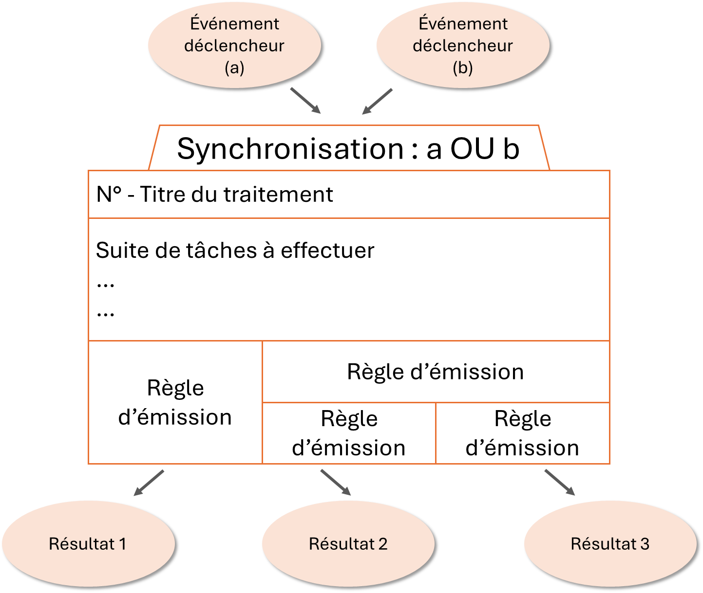
Événement déclencheur
- Le déclenchement d’un processus est soit d’origine temporelle, soit issu d’un acteur interne ou externe ;
Définition
Un événement déclencheur est un fait nouveau pour le système d’information (flux d’information) qui déclenche une (ré)action d’un acteur.
- Un événement déclenche une activité soit seul, soit en synchronisation avec d’autres (ex. : réception d’une réclamation client par le service commercial qui en déclenche le traitement).
Synchronisation des événements déclencheurs
Définition
La synchronisation exprime une condition de coordination d’événements qui déclenche une activité. Elle est exprimée sous la forme d’une expression logique utilisant notamment les opérateurs « ET » et « OU ».
Exemple
- L’activité « lancement de la livraison » est déclenchée dans un délai de 7 jours après qu’une commande a été mise en attente (a ET b) ou si un ordre de commande urgente a été émis (c).
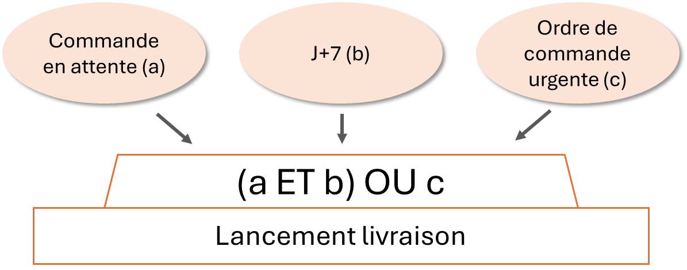
Activité/traitement
Définition
Une activité (traitement) est constituée par un ensemble de tâches non interruptibles réalisées par un acteur interne au processus.
- Une activité (un traitement) est représentée par un verbe ou un substantif (ex. : « traiter la commande » ou « traitement de la commande ») ;
- On peut décrire, dans le rectangle de l’activité, l’ensemble des actions nécessaires à l’obtention du ou des résultats souhaités (saisie, impression, etc.) ;
- L’activité ne doit nécessiter aucun autre événement en entrée que ceux qui sont déjà représentés ;
- Une activité déclenche au moins un résultat (flux à destination d’un acteur externe ou interne) ;
- Le résultat d’une activité peut devenir l’événement déclencheur d’une autre activité.
A savoir
N’oubliez pas qu’une activité est constituée d’une suite d’actions non interruptibles. Elle ne peut être interrompue par l’attente d’un événement. Si tel est le cas, les activités doivent être segmentées.
Exemple
Analyse du schéma « événement-résultat »
- L’analyse du schéma représenté, qui devient une situation dans laquelle les commandes des clients sont reçues par le service commercial et traitées par le service logistique, permet de distinguer :
- Le domaine d’étude du schéma qui correspond au processus de traitement d’une commande avec rupture de stock ;
- Les événements déclencheurs, les résultats, les activités, les règles de synchronisations du schéma :
- Deux événements déclencheurs sont représentés :
- « commande client » ;
- « mardi ou vendredi ».
- Quatre résultats ont été émis par les traitements :
- « commande à livrer » ;
- « proposition carte fidélité » ;
- « commande en attente ».
- « bon de livraison émis ».
- Certains d’entre eux deviennent également des événements déclencheurs des traitements ultérieurs ;
- Deux événements déclencheurs sont représentés :
- Les activités représentées, « SUIVI CLIENT » et « SERVIR COMMANDE ».
- L’activité n°2 nécessite plusieurs événements déclencheurs ; la commande n’est servie que le mardi et le vendredi si un ordre de commande à livrer a été émis ou si une commande avait antérieurement été mise en attente.
- Une segmentation des activités est nécessaire car, pour servir la commande, il faut attendre le mardi ou le vendredi suivant.
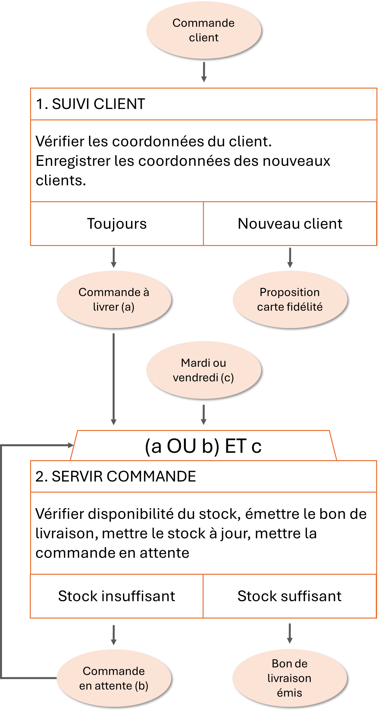
Résultats
- L’activité fournit un ou plusieurs résultats consistant en un flux ou un changement d’état du système d’information ;
- L’un au moins des résultats arrête l’activité.
Règles d’émission
Définition
Les règles d’émission traduisent les conditions dans lesquelles sont émis les différents résultats.
- Les résultats d’une activité peuvent être conditionnés par des règles d’émission. Exemple
- Si l’on reprend les activités « SUIVI CLIENT » et « SERVIR COMMANDE », les règles d’émission indiquent les conditions d’émission des différents résultats :
- Le résultat « Commande à livrer » est émis dans tous les cas ;
- « Carte fidélité » n’est émis que s’il s’agit d’un nouveau client ;
- « Commande en attente » n’est émis que si le stock est insuffisant et, à défaut, un « bon de livraison » est édité.
Mise en pratique
Cas pratique 3 : L’étrier
Compétences attendues
- Identifier les acteurs, les activités et les fl ux d’informations
- Représenter un processus sous forme de schéma « événement-résultat »
- Corriger les dysfonctionnements d’un processus
L’Étrier est une association comptant 1 000 adhérents pratiquant l’équitation. Les activités sont organisées autour d’un poney-club, d’une école d’équitation, et d’une importante écurie de propriétaires. L’association propose, tout au long de l’année, diverses manifestations (animations, stages…). Elle recrute des intérimaires pour assurer le confort et la sécurité des participants. De nombreux candidats anticipent le recrutement et envoient des lettres de motivation spontanées. Les demandes sont stockées et, le 1er de chaque mois, le service RH les examine et refuse celles qui n’ont aucun intérêt. Deux mois avant la date de la manifestation, le service RH demande au responsable des animations le nombre de candidats à embaucher et les compétences requises. Lorsque le service RH a obtenu cette réponse, il consulte les lettres de motivation reçues et convoque les candidats pour un entretien en leur envoyant un courrier qui récapitule les pièces nécessaires. À l’issue de l’entretien, une réponse est donnée aux candidats. Si elle est positive, ils reçoivent un contrat à signer. Dans le cas contraire, une lettre de refus est envoyée.
Astuce
Une lecture attentive de l’énoncé permet de déterminer les acteurs internes et externes intervenant dans le processus. Il convient ensuite d’identifier les activités de chacun afin de dresser un schéma « événement-résultat » en créant une colonne par acteur.
Missions
- Repérez le ou les acteurs externes ou internes participant au processus de réparation.
- Établissez le schéma « événement-résultat » du processus de traitement du recrutement de personnel temporaire en faisant apparaître le rôle joué par les différents acteurs.
- Le service RH estime que la procédure prend du retard lorsque le responsable des animations ne répond pas immédiatement à la demande du nombre de candidats à embaucher et des compétences requises. Il pense que ces données pourraient être fournies 2 mois avant la date de la manifestation de manière automatique sans demande préalable du service recrutement. Modifiez le schéma en conséquence.
3.1.5 Schéma « événement-résultat » avec découpage du traitement par acteurs
- Basé sur le précédent exemple, le schéma ci-après détaille les activités réalisées par chacun des acteurs ;
- La démarche est la même que dans la modélisation précédente à une précision près : il convient de réserver une colonne pour chaque acteur.
Cas pratique
Mise en pratique
3.1.6 Amélioration ou modification d’un processus
- La modélisation des processus permet d’obtenir une vision globale de l’exécution et de l’enchaînement des différentes tâches et de présenter un diagnostic susceptible d’aboutir à une remise en cause des pratiques afin de corriger les dysfonctionnements spécifiques ou d’améliorer la performance ;
- Cette démarche dynamique d’amélioration permanente répond aux exigences de la norme ISO 9001 qui impose que le traitement des processus clés de l’organisation soit formalisé.
Définition
L’amélioration des processus consiste à transformer les processus afin qu’ils ne génèrent aucun dysfonctionnement, ou pour réduire les délais ou simplifier les procédures, ou encore pour utiliser avec davantage d’efficience les ressources disponibles.
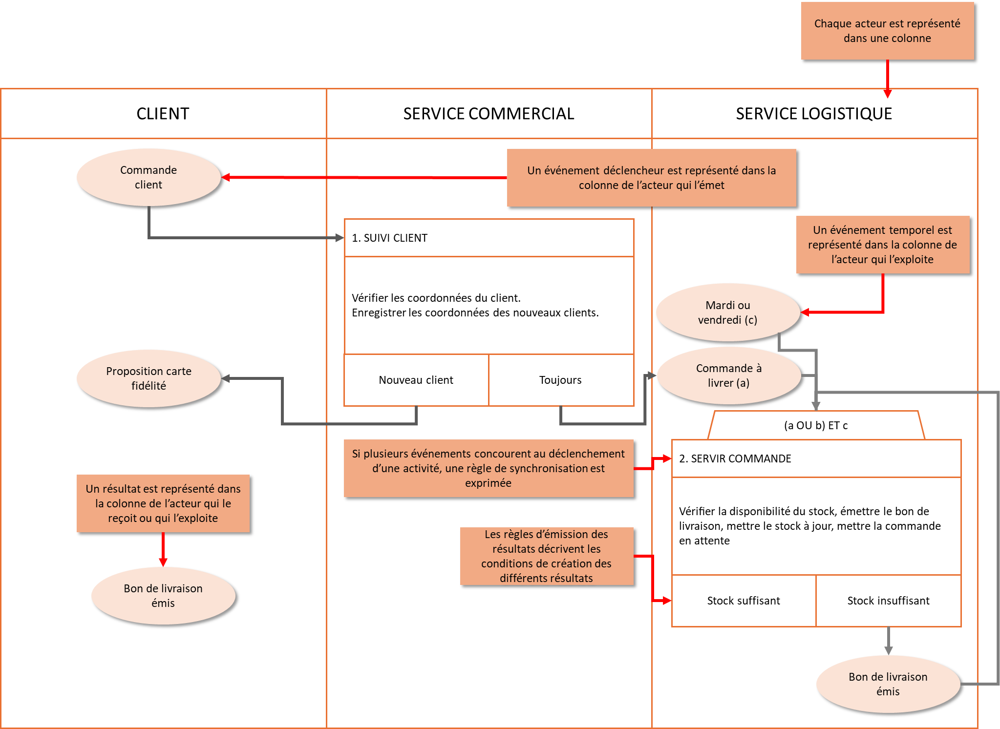
- Dans l’exemple précédent, on se rend compte qu’une étape essentielle a été oubliée : la vérification de la solvabilité du client avant toute acceptation d’une nouvelle commande !
- Or, l’absence de vérification de la solvabilité d’un client pourrait influer sur la performance de l’organisation.
- Il faut alors modifier le schéma en conséquence.
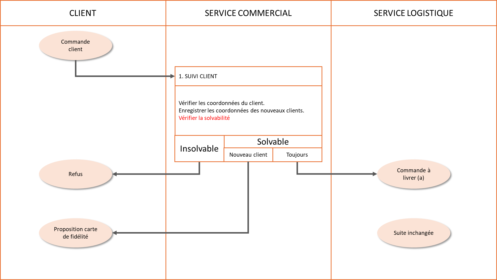
3.1.7 Processus clés
Définitions
Les processus clés sont des processus critiques et prioritaires qui portent les facteurs de réussite et qui sont source de création de valeur pour l’entreprise.
- Les processus clés sont stratégiques car ils contribuent de manière significative à l’atteinte des objectifs stratégiques. Leur maîtrise est vitale pour l’organisation.
Exemple
Dans un cabinet comptable, les processus suivants ont notamment été identifiés :
- Recherche de nouveaux clients ;
- Établissement des lettres de mission des clients ;
- Recrutement d’un employé administratif ;
- Facturation des clients ;
- Enregistrement des notes de frais des membres du personnel ;
- Production des documents comptables des clients ;
- Contrôle des documents comptables des clients. Tous ces processus à l’exclusion, des numéros 3 et 5, créent de la valeur puisqu’ils sont vitaux pour le cabinet d’expertise et sont en relation directe avec ses clients.
Mise en pratique
Synthèse
La modélisation des flux d’information
- La schématisation des flux d’information met l’accent sur les échanges entre les personnes ou les services et offre une vision d’ensemble de la circulation de l’information et des documents entre les acteurs du processus.
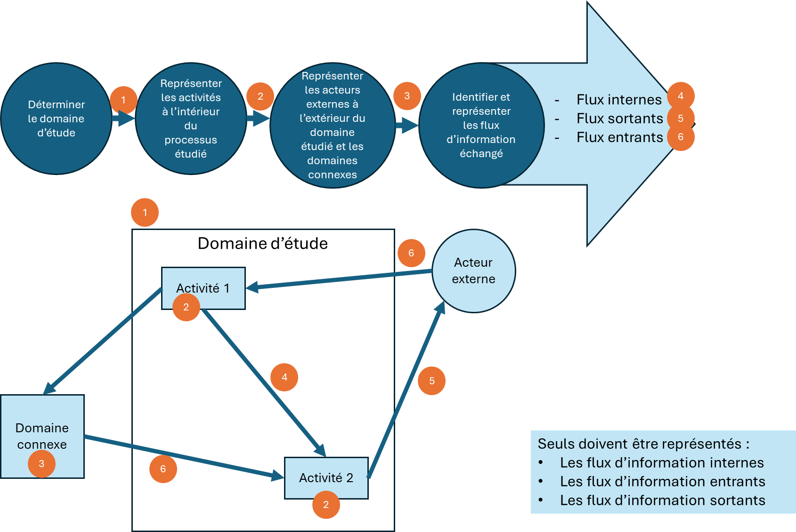
- L’identification des différents flux d’information nécessite l’analyse de l’ensemble des tâches réalisées par les différents acteurs afin de mettre en évidence leur chronologie.
La schématisation et l’amélioration des processus
L’amélioration du système d’information Afin d’analyser le traitement d’une activité et les éventuels enrichissements ou évolutions à apporter au SI, il est nécessaire :
- D’identifier les flux et les acteurs ;
- De réaliser les schémas des flux ;
- D’élaborer le schéma « événement-résultat », en respectant une démarche rigoureuse ainsi que le formalisme du modèle.
Le schéma « événement-résultat »
Une fois le processus modélisé, un diagnostic permet d’identifier et d’éliminer les dysfonctionnements, les anomalies ou les insatisfactions des bénéficiaires.
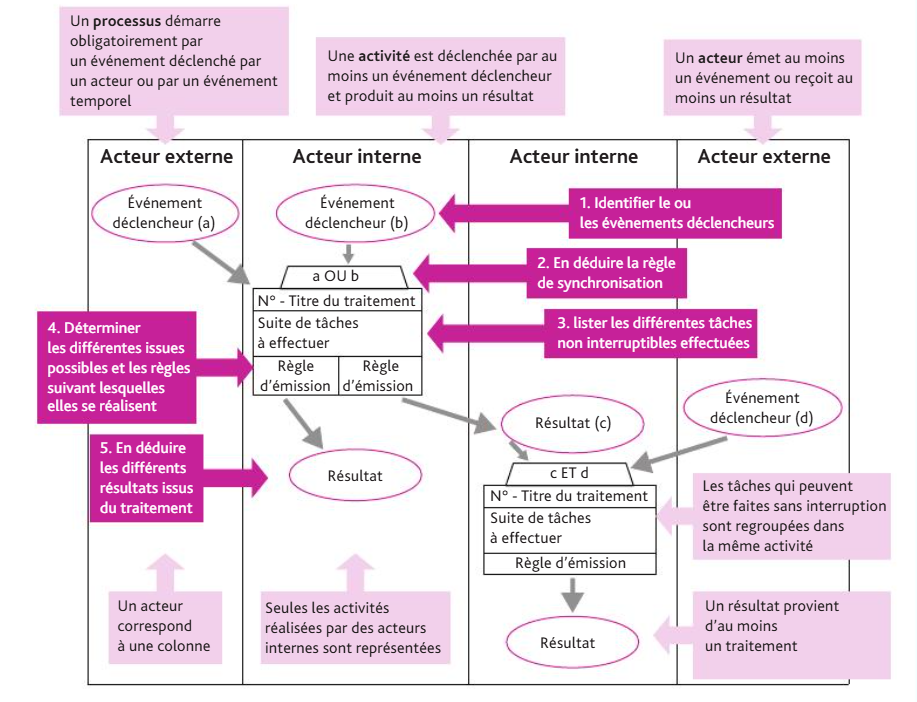
3.2 Les progiciels au service des processus
Programme
Pédagogie
Compétences attendues
- Identifier les recours à la base de données dans le déroulement des processus
- Identifier la contribution d’un progiciel à la performance d’un processus
- Distinguer les progiciels de gestion généralistes, verticaux et intégrés (PGI)
- Apprécier l’influence d’un PGI sur l’organisation des processus
Savoirs associés
- Actions d’un processus sur les tables de la base de données
- Caractéristiques et couverture fonctionnelle des progiciels de gestion
- Modes d’hébergement et licences
- Progiciel de gestion intégré : implantation, coûts, influence sur les processus
- Workflow et traçabilité des opérations
Plan
- Cours 3.2.1 Le lien entre les processus et les bases de données 3.2.2 Les progiciels de gestion : généralités 3.2.3 Les progiciels de gestion 3.2.4 Les progiciels de gestion intégrés (PGI)
- Synthèse
Mots clés
Application • Couverture fonctionnelle • Exportation • Implantation • Importation • Paramétrage • Passerelle • PGI • Processus • Progiciel • Temps réel • Traçabilité • Workflow
Les processus sont, pour la plupart, automatisés et s’appuient sur des bases de données : quelles tables sont mobilisées, et pour y faire quoi ? Vient ensuite le choix de l’outil. Si le marché des logiciels est dynamique et l’offre pléthorique, encore faut-il déterminer le logiciel adapté à un processus donné. Faut-il utiliser un PGI ? Quels en sont les avantages et les contraintes ? Qu’est-ce qu’un workflow ? Comment assurer la traçabilité des opérations ?
Cours
3.2.1 Le lien entre les processus et les bases de données
Processus et informations
- Les processus reposent sur le traitement de l’information ;
- À chaque étape du processus, l’information conservée par l’organisation est modifiée ;
- S’ensuit un cycle continu de tâches : l’information est collectée, puis éventuellement stockée avant traitement ;
- Une fois le traitement effectué, l’information modifiée est enregistrée puis diffusée auprès des destinataires.
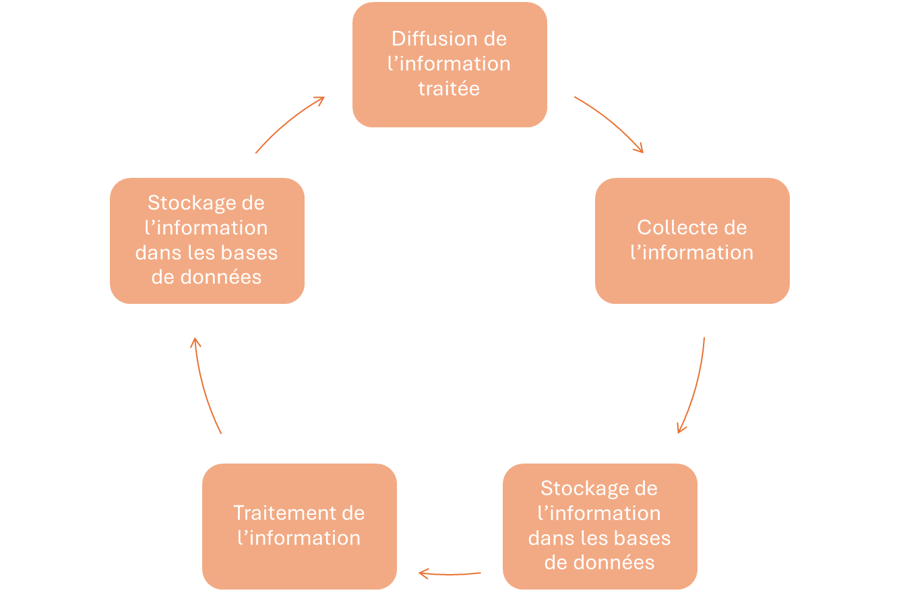
Actions sur les bases de données
Le schéma « événement-résultat » peut être enrichi en mentionnant les différents types d’actions sur les bases de données afin de suivre le cycle informationnel.
Exemple : L’arrivée d’une réclamation émise par un client après réception d’une commande de la société Carton Plein entraîne l’exécution par le service commercial de cinq tâches constituant le processus Réclamation.
| Acteurs | Tâches | Tables de la base de données utilisées |
|---|---|---|
| Service commercial | 1. Contrôle de la commande réalisée par le client | Lecture des tables CLIENT, COMMANDE, LIGNE COMMANDE, ARTICLE, FACTURE |
| 2. Analyse de l’objet de la réclamation | Création d’une réclamation dans la table RÉCLAMATION | |
| 3. Refus de la réclamation et rédige un message à destination du client | Modification apportée à la table RÉCLAMATION | |
| 4. Acceptation de la réclamation, rédaction d’un ordre de livraison complémentaire à destination du service livraison et information du client | Modification apportée à la table RÉCLAMATION | |
| 5. Acceptation de la réclamation, rédaction d’un avoir et information du client | Modification apportée à la table RÉCLAMATION et création d’un avoir dans la table FACTURE |
Le progiciel de gestion de Carton Plein utilise les 6 tables suivantes :
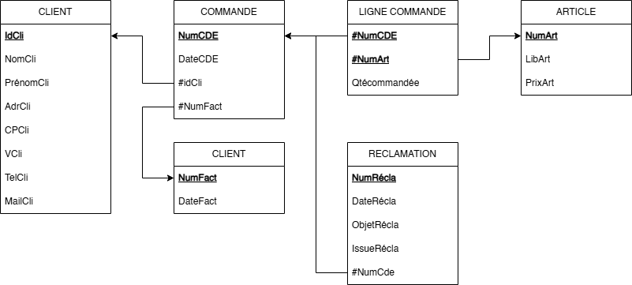
- À partir des éléments d’un processus et de l’analyse du modèle relationnel, il est possible de créer un schéma « événement-résultat » précisant les actions sur les tables de la base de données :
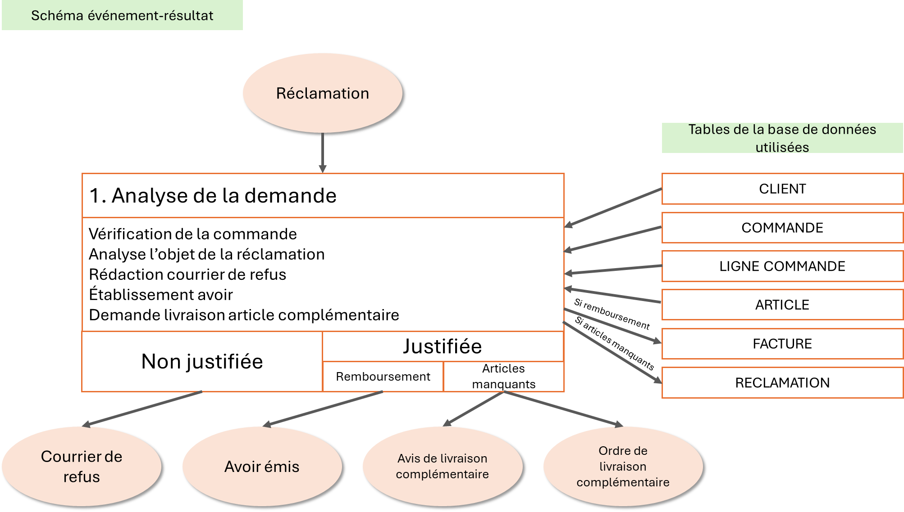
- Les tables CLIENT, COMMANDE, LIGNE COMMANDE et ARTICLE sont consultées par le service commercial pour analyser la demande du client et comprendre l’objet de sa réclamation ;
- Une ligne est créée dans la table RÉCLAMATION pour conserver la réclamation du client ainsi que son issue (acceptée ou refusée) ;
- Une ligne concernant l’avoir est créée dans la table FACTURE si le remboursement d’un article est accordé.
Modalités de représentation des différentes actions sur les bases de données
- Par convention, les différentes tables utilisées sont représentées de manière simplifiée à droite du schéma « événement-résultat » ;
- Chaque type d’opération se traduit par une flèche différente sur laquelle il est possible de mentionner la condition éventuelle pour réaliser l’action.
- Opération de consultation/interrogation de la base
- Une flèche qui part de la table et qui va vers l’activité symbolise une opération de consultation/interrogation des données conservées dans la table.
Exemple
Si l’on consulte la table CLIENT pour analyser une réclamation, la flèche ira de la table CLIENT vers l’activité « Analyse de la demande ».
- Opération de création de données
- Une flèche qui part de l’activité et qui va vers une table symbolise une opération de création de données dans cette table ;
- Une ligne est ajoutée et matérialise un nouvel enregistrement.
Exemple
La création de l’avoir dans la table FACTURE est matérialisée dans la figure précédente.
- Opération de mise à jour des données
- Une flèche double entre l’activité et une table symbolise une opération de mise à jour des données contenues dans la table.
Exemple
En cas de changement d’adresse d’un client, il convient de modifier cette donnée dans la table CLIENT.
- Opération de suppression
- Un trait barré reliant l’activité et la table représente une suppression de données dans une table, c’est-à-dire la suppression d’une ligne.
Exemple
Si l’entreprise ne commercialise plus un produit, elle devra le supprimer de la table ARTICLE.
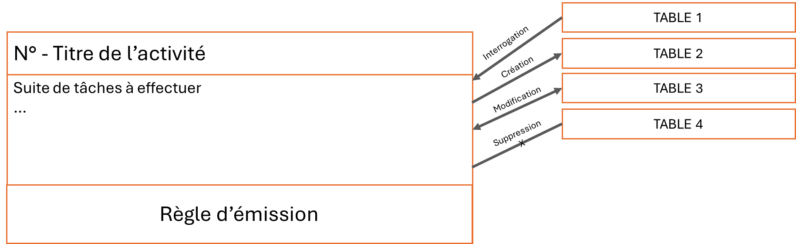
Mise en pratique
3.2.2 Les progiciels de gestion : généralités
Les caractéristiques des progiciels de gestion
Définitions
- Une application informatique (logiciel) est un programme utilisé pour automatiser des tâches de traitement de l’information dans un domaine particulier. Son objet est contingent et libre en fonction des besoins ;
- Le terme progiciel est une contraction de « produit » et « logiciel ». Il désigne une application, conçue par un éditeur de programmes, utilisable par de nombreuses organisations pour exercer tout ou partie de leurs fonctions. Son objet est prédéterminé.
- La mise en œuvre des progiciels nécessite un paramétrage réalisé à partir d’une analyse des besoins spécifiques des utilisateurs et des objectifs stratégiques ;
- Des tests et une formation facilitent également l’acceptation du produit par les utilisateurs.
Exemple
La mise en place d’un nouveau progiciel comptable nécessite de saisir les caractéristiques propres à la société (raison sociale, forme juridique, activité, lieu du siège social, numéro d’immatriculation, dates de début et de fin d’exercice comptable).
L’hébergement de la solution
- Les organisations peuvent :
- Soit disposer d’un logiciel sur poste en acquérant une licence d’utilisation ;
- Soit recourir à un logiciel en ligne sur abonnement.
Le SaaS
- La solution en ligne, le SaaS (Software as a Service), présente des avantages indéniables : une connexion Internet permet d’accéder à une suite de logiciels régulièrement mis à jour ;
- Les données sont stockées dans le cloud et les prestataires en assurent la sauvegarde ;
- Les investissements matériels sont moins coûteux et moins complexes ;
- Ainsi, au lieu d’un investissement générateur de coûts fixes, les entreprises supportent un coût qui varie en fonction, le plus souvent, du nombre d’utilisateurs ou du nombre de connexions ;
- Le passage à une solution en ligne comporte également des inconvénients : la connexion doit être fiable, les coûts, qui augmentent au fur et à mesure de l’évolution de l’activité, peuvent exploser ;
- La récupération des données doit être aisée en cas de changement de prestataire et la confidentialité des données assurée.
L’acquisition d’une licence
- La solution sur place a le mérite de laisser l’organisation maîtresse de la gestion, de la sécurité et de la localisation de ses données ;
- Elle permet d’éviter le transfert de données sensibles en ligne mais requiert des moyens matériels, logiciels et humains sur place.
3.2.3 Les progiciels de gestion
Les progiciels de gestion généralistes ou horizontaux
Définition
Un progiciel de gestion horizontal est une application assurant une fonction au sein d’une organisation (ex. : gestion commerciale). Cette application sera utilisée de façon similaire dans un grand nombre d’organisations.
- Parmi les nombreux progiciels de gestion existant sur le marché sont présentés ceux qui sont utilisés fréquemment par les organisations ;
- Certains éditeurs proposent également des suites complètes.
Exemple
Les éditeurs EBP ou SAGE offrent différentes applications (comptabilité, paie, immobilisations, gestion commerciale, trésorerie…) couvrant l’ensemble des besoins des organisations.
Le progiciel de gestion comptable
- La tenue de la comptabilité, fonctionnalité de base de tout progiciel comptable, répond à une obligation légale s’imposant à toutes les entreprises ;
- Cette application doit s’adapter au contexte d’une organisation qui crée son propre plan comptable tout en respectant le PCG, ses journaux auxiliaires ou des modèles d’écriture comptable.
| Paramétrage | - Caractéristiques de l’entreprise (exercice comptable, identification, TVA…) ; - Paramétrage du plan comptable, des comptes divisionnaires et des journaux auxiliaires. |
|---|---|
| Saisie des écritures et lettrage | - Saisie dans les journaux mensuels spécialisés grâce à des modèles ; - Saisie automatisée à partir de fichier numérique (relevé bancaire…) ; - Lettrage manuel ou automatisé. |
| Clôture des comptes | - Écritures d’iventaire ; - Établissement des documents de synthèse (compte de résultat, bilan, annexe des comptes…). |
| Edition des documents | - Journaux, grand-livre, balance, documents de synthèse ; - Déclarations obligatoires (TVA, impôts sur les bénéfices…) ; - Fichier des écritures comptables. |
- Le lettrage des comptes de tiers permet de rapprocher les montants enregistrés dans un compte de tiers de ceux qui figurent, par exemple, dans les comptes de trésorerie afin de s’assurer que les règlements sont complets ;
- Après lettrage, il est possible de ne faire apparaître que les mouvements non lettrés afin de gérer plus facilement les échéances des dettes ou des créances ;
- L’application doit permettre l’importation et l’exportation de données vers des progiciels connexes, d’où un gain de temps et un risque d’erreur moindre ;
- Toutes les entreprises soumises à une obligation de présentation de documents comptables et qui tiennent leur comptabilité de façon informatisée doivent être en mesure de produire le fichier des écritures comptables à la demande de l’administration fiscale (article L.47 A-I du livre des procédures fiscales).
Exemple
L’éditeur EBP propose un progiciel comptable nommé EBP Compta Classic ainsi qu’une version en ligne. L’éditeur SAGE propose de nombreuses versions en ligne de ses progiciels : Compta & Facturation pour les start-up et les PME, Sage 50Cloud Ciel pour les arti-sans et PME.
Le progiciel de gestion de paie
- Une application de gestion de paie couvre toutes les fonctionnalités nécessaires au processus de traitement de la paie et doit être facilement paramétrable conformément à la législation ;
- Ce progiciel peut également comprendre un module de gestion du recrutement et de la formation du personnel ainsi que des fonctionnalités d’exportation des données vers d’autres applications, notamment vers le progiciel comptable afin de déverser les opérations de paie dans les comptes.
Exemple
L’éditeur CEGID propose un outil de traitement de la paie en version monoposte ou en mode SaaS : paie Cegid.
| Paramétrage des obligations légales | - Taux de cotisations sociales ; - Seuils légaux ; - Exonérations. |
|---|---|
| Établissement de la paie | - Gestion du temps de travail (congés, absences, heures supplémentaires…) ; - Gestion des profils de paie ; - Élaboration des fiches de paie et mise en paiement. |
| Établissement des déclarations obligatoires | - Gestion des cotisations sociales ; - Établissement des déclarations sociales ; - Bilan social et tableaux de bord. |
| Fonctions ressources humaines | - Gestion des recrutements, des carrières ; - Gestion des formations ; - Communication avec les salariés… |
Le progiciel de gestion commerciale
- Un progiciel de gestion commerciale gère l’ensemble des tâches des processus commerciaux : prise en compte des commandes, établissement des devis, des factures mais également mise en place de la politique tarifaire, remises éventuelles, gestion des clients, établissement des contrats ;
- Ce progiciel assure également le suivi de la performance commerciale de l’organisation, des fonctionnalités plus élaborées pouvant autoriser une gestion de la relation client (GRC ou CRM – Customer Relationship Management) et la mise en place du commerce électronique.
| Gestion des achats | - Gestion des fournisseurs (catalogues, tarifs et délais) ; - Commandes aux fournisseurs. |
|---|---|
| Gestion des ventes | - Catalogues articles, tarifs et promotions ; - Gestion des clients ; - Devis, commande, facture, bon de livraison ; - Coût de revient, marges, statistiques… |
| Gestion des stocks | - Approvisionnements ; - Stocks d’alerte. |
| Gestion de la relation client | - Segmentation de la clientèle ; - Prospects, campagnes marketing ; - Analyse des comportements d’achat. |
| Commerce électronique | - Gestion d’un site de vente en ligne ; - Collecte des données des clients ; - Gestion des modalités de paiement. |
Exemple
L’éditeur SAGE propose un logiciel de devis et de facturation en mode SaaS : Sage 100Cloud Gestion commerciale.
Les autres progiciels de gestion
Gestion des immobilisations
- Un progiciel de gestion des immobilisations permet de gérer en intégralité le parc des immobilisations d’une organisation depuis leur acquisition jusqu’au moment de leur cession ou de leur mise au rebut ;
- Des fonctionnalités supplémentaires autorisent un transfert automatique des écritures d’amortissement et des cessions d’actif vers le progiciel comptable et produisent les déclarations fiscales obligatoires.
| Suivi des immobilisations | - Entrée des immobilisations et paramétrage de leurs caractéristiques (valeur, amortissements, subvention…) ; - Édition d’un inventaire et des tableaux de l’annexe fiscale ; - Sortie des actifs et calculs des plus ou moins-values. |
|---|---|
| Amortissements des immobilisations | - Calcul des amortissements économiques et dérogatoires, réajustement éventuel du plan d’amortissement ; - Dépréciations des actifs immobilisés ; - Édition des tableaux de l’annexe fiscale. |
Gestion logistique
- Un progiciel de gestion logistique gère l’ensemble des ressources liées à la chaîne logistique (supply chain) : ressources matérielles, informatiques, humaines, mais aussi les plannings des tâches, les opérations de stockage, d’acheminement des matières premières ou produits dans les entrepôts, les ateliers et même jusque chez les clients ;
- Ce type d’application permet de tracer les matières et les produits.
| En amont | - Gestion des flux en provenance des fournisseurs ; - Organisation et réception des commandes. |
|---|---|
| En interne | - Opérations de stockage ; - Opération de circulation des matières et produits. |
| En aval | - Gestion des flux à destination des clients (manutention, transport, planning de livraison…). |
Gestion de production
- Le rôle d’une application de gestion de la production assistée par ordinateur (GPAO) est d’assurer la mise en œuvre des opérations des processus de production ;
- Les entreprises ayant toutes des organisations de production différentes, un progiciel de GPAO doit être facilement paramétrable pour pouvoir s’adapter au plus grand nombre.
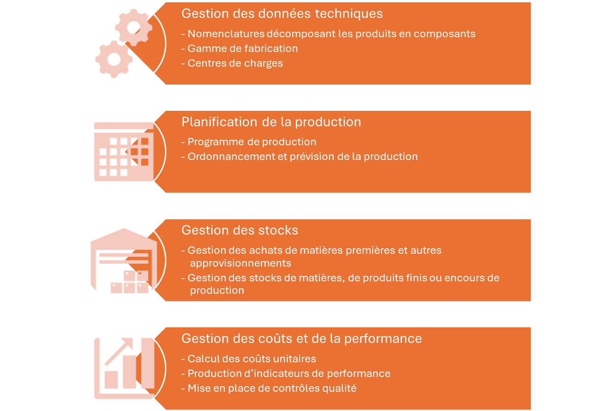
Les passerelles entre logiciels généralistes - Une organisation qui recourt à différents progiciels spécialisés pour assurer l’automatisation de l’ensemble de ses processus a besoin de développer un certain nombre de passerelles entre les applications afin d’assurer les échanges d’information.
Le progiciel de gestion vertical
Les caractéristiques
Définition
Un progiciel de gestion vertical est un logiciel conçu pour s’adapter aux besoins spécifiques d’un secteur d’activité particulier. Il est dédié à un type de métier en particulier.
Exemple
Un progiciel d’agence de voyages, comme IGA Voyage sélectionné par de nombreuses agences, regroupe plusieurs modules (excursion, circuit, transfert, séjour hôtelier…). Il doit permettre de construire des programmes, d’effectuer des demandes de devis, des réservations, de gérer les relations avec les voyageurs, de réaliser des campagnes publicitaires, de remplir les obligations légales en matière de comptabilité et d’assurer un suivi de l’activité et de ses performances.
Le progiciel de gestion de cabinet comptable
- Ce progiciel qui centralise tous les besoins des cabinets comptables, permet une gestion continue des processus de l’expert-comptable depuis la lettre de mission jusqu’à la facturation ;
- Le suivi quotidien de l’activité interne ou le pilotage du cabinet peut être optimisé.
Exemple CEGID Expert est un progiciel métier personnalisable qui propose différentes fonctionnalités couvrant les besoins des cabinets d’expertise comptable : suivi des dossiers clients, des notes de frais, des temps de travail, de la facturation et de l’activité du cabinet.
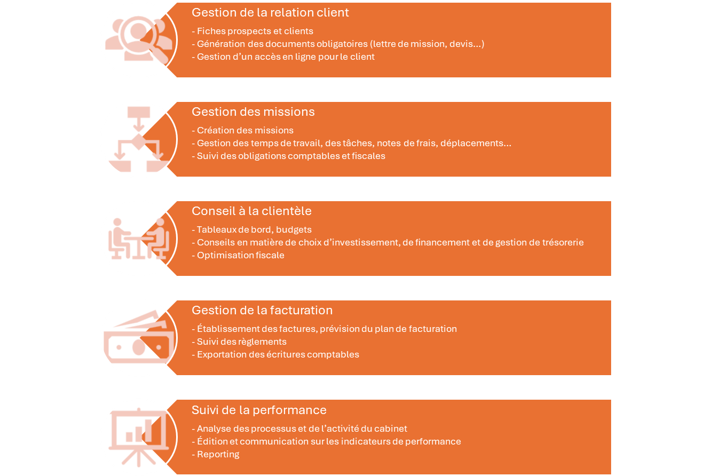
Mise en pratique
Cas pratiques
3.2.4 Les progiciels de gestion intégrés (PGI)
- Les progiciels de gestion intégrés constituent un axe structurant des systèmes d’information ;
- Initialement, ils touchaient surtout les grandes et les moyennes entreprises ;
- Cependant, les nouveaux produits proposés par les éditeurs, plus simples à installer et à utiliser, moins coûteux, permettent aux PME d’y accéder.
Exemple
Sage 100Cloud Entreprise est un PGI développé par l’éditeur SAGE à destination des PME qui propose des modules de gestion de l’activité commerciale, comptable, de reporting et des tableaux de bord. Ce produit est proposé en mode SaaS moyennant un forfait.
Les caractéristiques des PGI
Définition
Un progiciel de gestion intégré ou PGI (en anglais ERP, Enterprise Resource Planning) est « une application informatique paramétrable, modulaire et intégrée, qui vise à fédérer et à optimiser les processus de gestion de l’entreprise en proposant un référentiel unique et en s’appuyant sur des règles de gestion standards. » (R. Reix)
- Le PGI répond aux besoins de transversalité des traitements d’information ;
- Il s’agit d’une solution centralisée ;
- Il assure notamment le back-office (support interne des traitements d’information) de l’activité commerciale ;
- Il émane d’un seul éditeur, est homogène et conçu pour satisfaire une large clientèle ;
- La notion d’intégration signifie qu’il y a unicité de saisie, c’est-à-dire qu’une donnée n’est saisie qu’une seule fois et alimente une base de données (le « référentiel de données unique ») ;
- Le PGI permet un partage en temps réel des informations partout dans l’organisation ;
- Techniquement, les PGI exploitent des bases de données en mode client-serveur.
La couverture fonctionnelle du PGI
- Le PGI couvre au moins un domaine d’activité et parfois la totalité du SI de l’entreprise, à l’aide de différents modules paramétrables dont certains sont optionnels ;
- L’ensemble des domaines couverts constitue la couverture fonctionnelle du PGI.
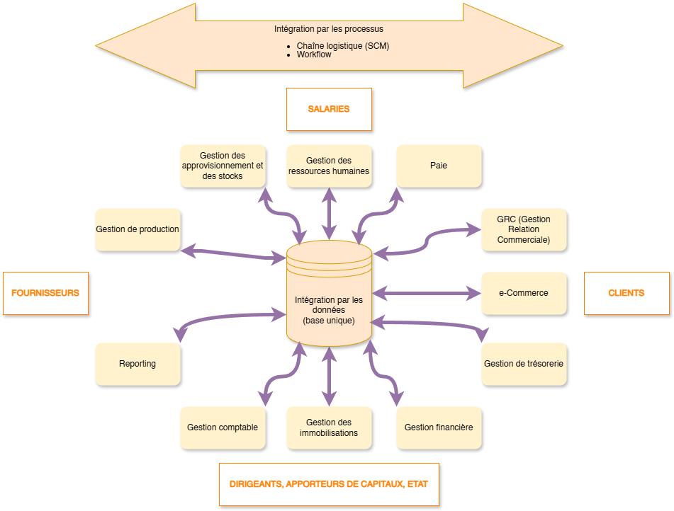
Exemple
SAP est le principal éditeur de PGI. Destinés aux grandes entreprises et multinationales, ses produits visent 25 secteurs d’activité. Ils sont modulaires et couvrent un large périmètre de gestion (approvisionnement, logistique, RH, production, gestion commerciale, comptabilité-finance).
L’implantation du PGI
L’expression des besoins
- Une fois la couverture fonctionnelle du PGI (son périmètre fonctionnel) définie, les besoins sont exprimés précisément à partir de l’analyse des processus et des règles de gestion, de la définition des règles à mettre en place, des changements organisationnels souhaitables et des écueils organisationnels à éviter.
Le choix du PGI et son implantation
- Le choix d’un PGI est contingent ;
- Outre les éditeurs classiques proposant des licences (SAP, Oracle…), des solutions open source se sont développées ;
- Leur code source (langage de programmation) est mis à la disposition des utilisateurs qui peuvent le modifier et l’adapter à leurs besoins (Odoo, Dolibarr) et des solutions en ligne avec paiement d’un abonnement sont de plus en plus recherchées (SAGE, EBP, CEGID) ;
- Le PGI influence l’organisation et les méthodes de travail ;
- Concrètement, la mise en place d’un PGI (son implantation) est une opération longue, de 18 à 24 mois en moyenne.
Les coûts
- La mise en place d’un PGI comprend le prix de la licence d’utilisation du produit ou de l’abonnement auquel il faut ajouter celui des extensions et interfaces spécifiques destinées à compenser une couverture fonctionnelle incomplète, des coûts d’infrastructure (ex. : SGBDR, systèmes d’exploitation, matériels, réseaux…), de mise en service, des prestations de conseil et de formation ;
- Suivent des coûts d’exploitation (ex. : assistance, maintenance, saisie des données, archivage…).
A savoir
Les contraintes du PGI ne doivent pas être systématiquement perçues de manière négative dans la mesure où elles peuvent conduire à une rigueur accrue.
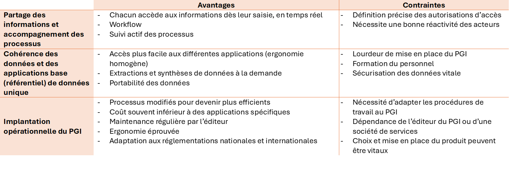
Le PGI et les processus
L’influence du PGI sur les processus
- Pour répondre aux pressions de l’environnement et aux besoins d’évolution interne, les entreprises cherchent à identifier et à redéfinir les processus de gestion qui conditionnent principalement leur performance économique ;
- Le choix d’un PGI contribue à l’évolution des processus, car ces progiciels sont construits sur un modèle d’organisation induisant de bonnes pratiques ;
- La mise en place du PGI favorise l’intégration des activités dans des processus transversaux pilotés horizontalement et orientés vers le client.
Le workflow
Définition
Les PGI fournissent généralement un moteur de workflow, c’est-à-dire un logiciel qui permet de gérer les flux de travaux et donc les flux d’information (ex. : alertes, statistiques, étapes intermédiaires…).
- Le workflow gère électroniquement l’ensemble des tâches à accomplir par les acteurs pour aboutir à un résultat, une information ou un document ;
- Le workflow permet ainsi de suivre les activités tout au long d’un processus ;
- Il se déroule selon une programmation prédéfinie qui modélise les circuits, les délais et les modes de validation de l’information.
Exemple Le moteur de workflow présenté ci-dessous permet de visualiser l’avancement de la demande de congé émise par le salarié qui, pour l’instant, n’a été visée que par son manager direct.
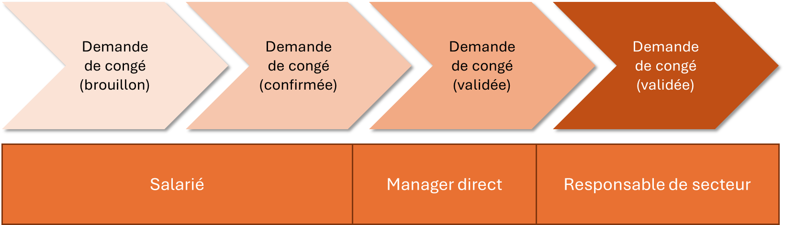
Les enjeux de la traçabilité des opérations
Définition
La traçabilité consiste à identifier l’origine et à reconstituer le parcours d’un produit ou service, depuis sa production jusqu’à sa diffusion.
- Un produit immatériel comme l’information comptable et financière doit être tracé afin :
- De permettre un contrôle de la donnée produite à l’aide d’informations détaillant son parcours :
- Son origine ;
- Les applications logicielles et les processus qui ont permis son enregistrement ou sa transformation ;
- Son point d’arrivée.
- De préserver la fiabilité du chemin de révision obligatoire pour contrôler les comptabilités informatisées ou pour satisfaire à la réglementation bancaire ;
- D’assurer la sécurité et la protection de l’information en contrôlant les accès aux données ;
- De garantir la cohérence des données dans des systèmes d’information de plus en plus complexes.
- De permettre un contrôle de la donnée produite à l’aide d’informations détaillant son parcours :
- La traçabilité passe par la présentation d’un schéma de production de l’information comptable et financière qui reconstitue l’ordre chronologique des opérations de production ou de transformation de cette information.
Exemple Chez InfoPlus, le poste Matériel informatique est passé de 3 000 € au 31/12/N–1 à 4 000 € au 31/12/N. La mise en œuvre de la traçabilité permet de reconstituer l’historique des opérations (ici, il s’agit de l’acquisition d’un nouveau matériel pour 1 000 €), les pièces justificatives et les acteurs concernés.
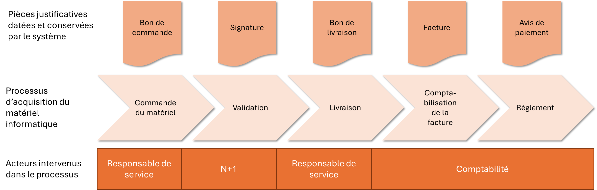
- Les destinataires de la traçabilité sont :
- Les dirigeants de l’entreprise qui, à tout moment, souhaitent contrôler les processus et sont intéressés par la reconstitution du circuit de traitement d’informations pour détecter des dysfonctionnements ;
- L’administration fiscale, laquelle impose aux entreprises de pouvoir retrouver la source de leurs informations comptables ;
- Les clients qui peuvent également s’intéresser à la traçabilité des produits et qui sont particulièrement concernés par les rappels de produits.
A savoir
Comment mettre en œuvre la traçabilité ? Les traces seront structurées de manière à conserver les informations suivantes :
- Qui : quel est l’utilisateur humain ou le module technique qui est intervenu ?
- Quand : quelle est la date et l’heure de l’événement de réalisation d’une opération ?
- Quoi : quelles sont les tâches qui ont été effectuées et les éléments de contexte indispensables à l’interprétation ultérieure de la trace ?
Mise en pratique
Cas pratiques
Synthèse
Schématiser le recours aux tables de la base de données pour réaliser un processus
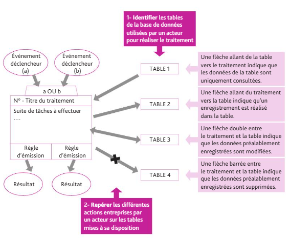
Les progiciels au service des processus
Types de progiciel de gestion
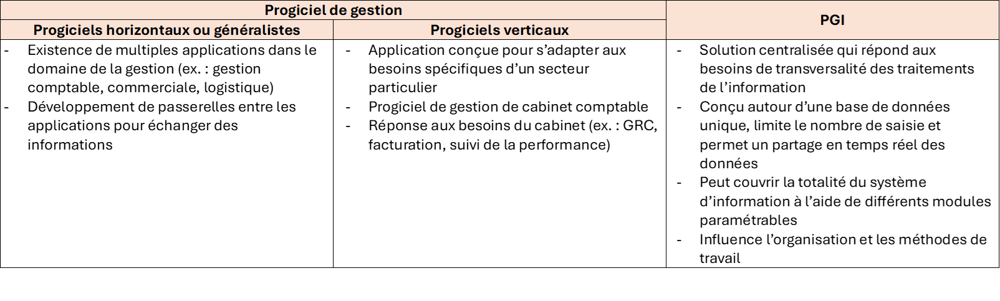
Atouts et limites du développement d’un PGI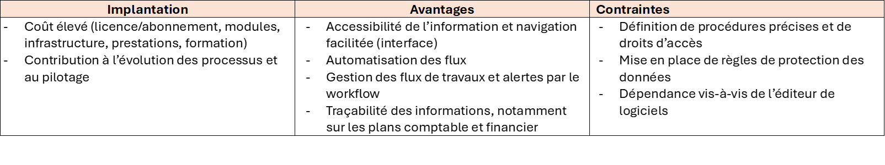